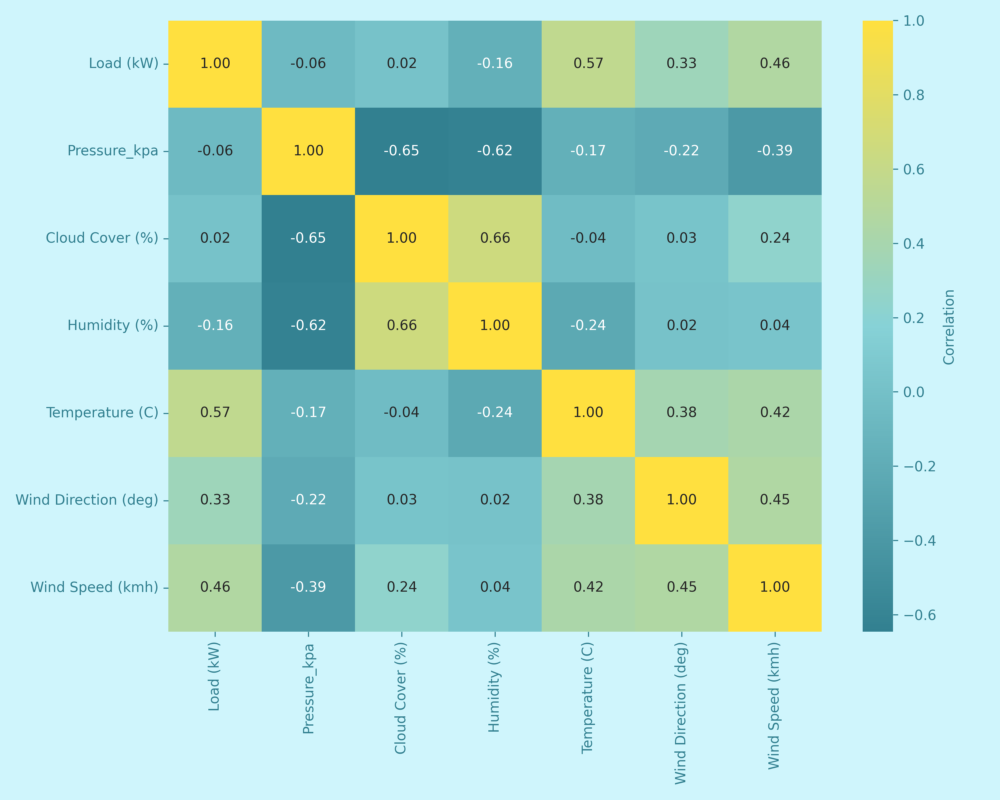
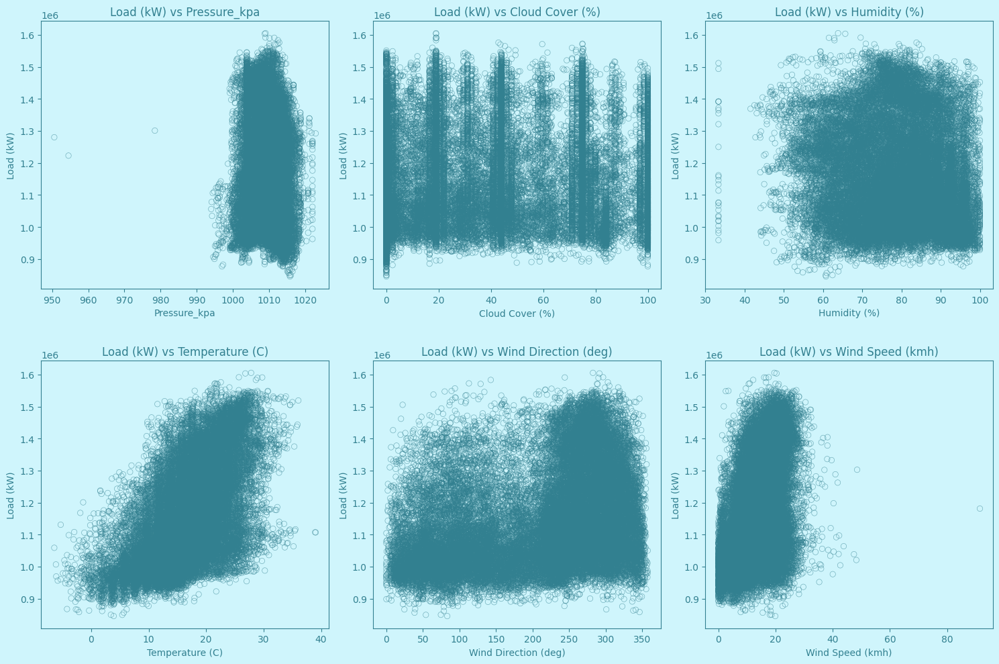

The increasing complexity of modern electricity grids, driven by a mix of renewable energy sources and varying consumption patterns, has made the accurate forecasting of electricity demand more essential than ever. As grids evolve, so does the necessity for more nuanced and data-driven approaches to manage them effectively.
This analysis is rooted in a comprehensive dataset that spans from March 18, 2017, to January 15, 2021. While the geographic location and the specific consumer demographics related to the data are not explicitly known, the time range uniquely positions us to analyze shifts in electricity demand, particularly in the context of the COVID-19 pandemic.
Objectives
Our primary objectives are threefold:
1. Identify Patterns in Electricity Usage: Understanding trends and anomalies in the data can guide efficient grid management and potentially result in cost savings for both suppliers and consumers.
2. Assess the Impact of COVID-19 on Electricity Demand: The pandemic has upended typical consumption patterns, and analyzing these shifts can offer insights into the resilience and adaptability of electricity grids during unprecedented events.
3. Uncover Correlations for Forecasting: By studying various factors that may correlate with electricity demand, we aim to build a foundation for more accurate and dynamic forecasting models.
Electricity Load Over Time
The time series plot gives an overarching view of the city's electricity load over a prolonged period. A distinct seasonality is apparent, with peaks typically occurring in colder months. This could be attributed to increased residential heating and other seasonal utilities.
An interesting deviation from the seasonal trend is observed in early 2020. The data points to a noticeable drop in electricity consumption during the initial phase of the COVID-19 pandemic. This may reflect changes in both residential and commercial energy use due to lockdowns and remote work policies.
Electricity Load Over Time (Hourly Load)
The hourly boxplot focuses on the electricity load within a day, revealing variations that correspond with waking and working hours. It's evident that load levels are higher during the typical 9-to-5 window, suggesting higher energy activities during these times.
Electricity Load Over Time (Weekly Load)
The weekly boxplot enhances our understanding of how electricity load fluctuates throughout a standard week. The marked difference between weekday and weekend electricity usage could be influenced by a range of factors, such as work schedules or leisure activities, offering a more granular view of the city's electricity consumption habits.
Electricity Load Over Time (Monthly Load)
At the monthly level, this chart reinforces the seasonality observed in the time-series data. Peaks and troughs line up with expected variations in weather, presenting an interesting lens through which to interpret the city's electricity needs and demands. It offers utility providers invaluable data for effective planning.
Electricity Load Over Time (Yearly Load)
The yearly boxplot serves as a summary, capturing long-term patterns in electricity load. A noticeable change in the median load following the advent of the COVID-19 pandemic underscores the widespread impact of the event on electricity consumption in the area.
This raises compelling questions about whether changes induced by the pandemic are temporary anomalies or indicators of a more permanent shift in consumption patterns. The data suggests a need for further studies to understand these long-term implications.
Seasonal Decomposition (Trend)
The seasonal decomposition chart, focused on annual seasonality, offers an intricate understanding of electricity consumption trends. It categorizes the data into three primary components: trend, seasonality, and residual. The Trend component reveals an alarming
uptrend in electricity usage that peaks in August 2019, after which it sharply declines. While it might be tempting to attribute this decline to the onset of COVID-19, such a conclusion may be premature without further investigation.
Seasonal Decomposition (Seasonality)
The Seasonality component uncovers consistent cycles in electricity demand, particularly notable spikes from September to October. Conversely, there is a discernible drop in December, which is somewhat unexpected. This drop may suggest that the dataset originates from a region without a winter season, potentially a country near the equator.
Seasonal Decomposition (Residual)
The Residual component features unexplained fluctuations, warranting a closer look for potential anomalies such as special events or technological shifts that may influence consumption patterns. One definitive event visible in the chart is the advent of COVID-19 in March 2020, which coincides with a sharp dip in the residual values.
Overall, the insights gleaned from the seasonal decomposition chart are invaluable for both long-term strategic planning and short-term operational adjustments in electricity management. They particularly suggest the need for dynamic pricing strategies to manage seasonal loads more efficiently."
Correlation Analysis (Heatmap)

The correlation heatmap provides a synthesized view of the relationships between the electricity load and various environmental variables. Darker shades indicate stronger negative correlations, while vibrant yellows indicate a strong positive correlation. It's evident that some variables, such as temperature, show a more pronounced relationship with the electricity load. The intertwined relationships of these variables offer a glimpse into the multifaceted determinants of electricity consumption in the city. For instance, higher temperatures might drive the use of cooling systems, while cloud cover could influence the efficiency of solar installations, thus affecting the overall electricity load.
Correlation Analysis (Scatter Plots)

The scatter plots further delve into the relationships between the electricity load and individual environmental variables. Each dot represents a data point, and the dispersion of these points gives an indication of the strength and nature of the relationship. For instance, the plot showcasing 'Load (kW) vs Temperature (C)' might hint at a potential nonlinear relationship, with electricity load increasing more rapidly at extreme temperatures. The scatter plots emphasize the nuances in these relationships and underscore the importance of considering multiple environmental factors when forecasting electricity demand or planning infrastructure investments.
Correlation Analysis (Time Series)
The time series plots juxtapose the electricity load with various environmental metrics over time. By visualizing these data streams side by side, we can discern patterns or events where changes in environmental variables lead to shifts in electricity consumption. For example, a sudden spike in wind speed might correspond with a dip in electricity load, possibly due to increased wind turbine production offsetting traditional electricity sources. These plots not only emphasize the temporal dynamics of electricity consumption but also highlight the potential for renewable energy sources to play a pivotal role in meeting the city's electricity needs.